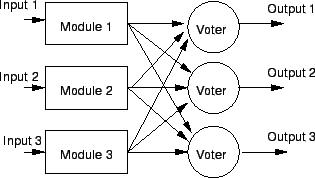
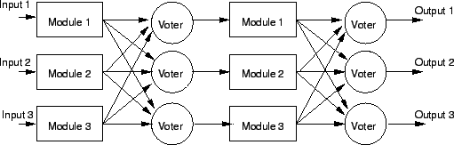

Next: ระบบ N Modular Redundancy
Up: ระบบที่คงทนต่อความเสียหาย
Previous: ระบบที่คงทนต่อความเสียหาย
Contents
Index
ระบบ Triple Modular Redundancy
ระบบ Triple Modular Redundancy (TMR) แสดงในรูป 9.8 แนวคิดพื้นฐานระบบ TMR คือมีอุปกรณ์ที่ทำงานพร้อมกันสามชุด และตัดสินการทำงานโดยใช้เสียงส่วนใหญ่ที่จะเป็นเอาท์พุทของระบบ ถ้าเกิดมีหนึ่งโมดูลเสีย โมดูลที่ทำงานได้สองตัวจะ ``ซ่อน'' การเสียหายของหนึ่งโมดูลจากเอาท์พุทโดยการโหวต ในการใช้งานจริงโมดูลทั้งสามชุดอาจเป็นตัวประมวลผล หน่วยความจำ หรือ อุปกรณ์ฮาร์ดแวร์ใดๆ รวมถึงอาจเป็นโปรแกรมสามชุดก็ได้
Figure 9.8:
ระบบ Triple Modular Redundancy
|
|
ปัญหาอย่างหนึ่งของระบบ TMR คือ ระบบจะทำงานล้มเหลวถ้าตัวที่ทำหน้าที่โหวตเสีย (Voter) นั่นคือความน่าเชื่อถือของระบบจะไม่สูงกว่าค่าความน่าเชื่อถือของตัวโหวต ถ้าเกิดการเสียหายของอุปกรณ์ใดๆ ในระบบแล้ว ส่งผลให้ระบบล้มเหลว ระบบดังกล่าว เรียกว่าจุดเดียวที่ทำให้เกิดการล้มเหลว (Single Point of Failure) มีหลายเทคนิคที่สามารถแก้ปัญหาของการเสียของตัวโหวตได้ วิธีหนึ่งคือการใช้ตัวโหวตหลายตัวดังแสดงในรูป 9.9 ซึ่งจะสร้างค่าเอาท์พุตสามค่า ตราบใดที่มีสองโมดูลทำงานได้ การต่อในลักษณะดังกล่าวสามารถทำต่อเนื่องโดยใช้การต่อหลายระดับ แสดงในรูป
9.10
Figure 9.9:
ระบบ Triple Modular Redundancy ที่ใช้อุปกรณ์โหวตสามชุด
|

|
ถ้าตัวโหวตเสียในระหว่างระดับ ระดับต่อๆ มาจะเห็นความผิดพลาดนั้น เป็นความผิดพลาดของอินพุททางหนึ่งเท่านั้น และจะโหวตออกไปจากระบบ ทำให้ใช้งานได้ต่อเนื่อง
Figure 9.10:
ระบบ Triple Modular Redundancy ที่มีหลายลำดับชั้น
ที่ใช้อุปกรณ์โหวตสามชุดในทุกระดับ เพื่อไม่ให้ค่าผิดพลาดสามารถส่งผ่านระหว่างระดับ
|

|
Vara Varavithya
2002-03-09
![\includegraphics[width=2.8in]{fig/ft6tmr.eps}](img618.png)